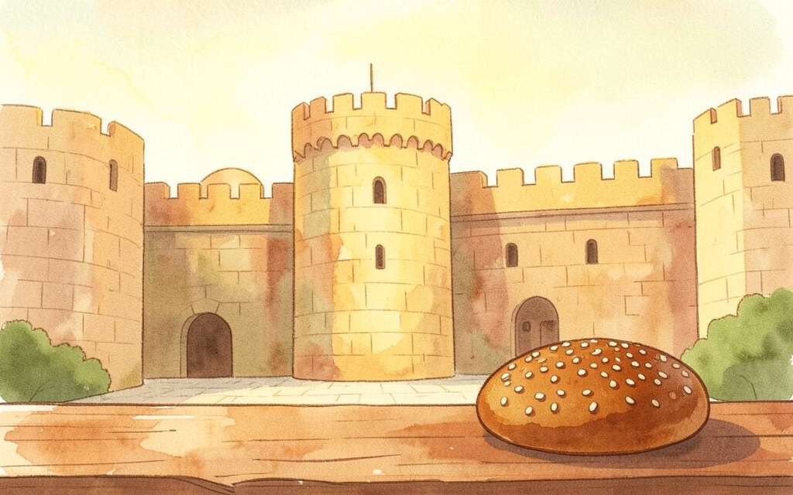
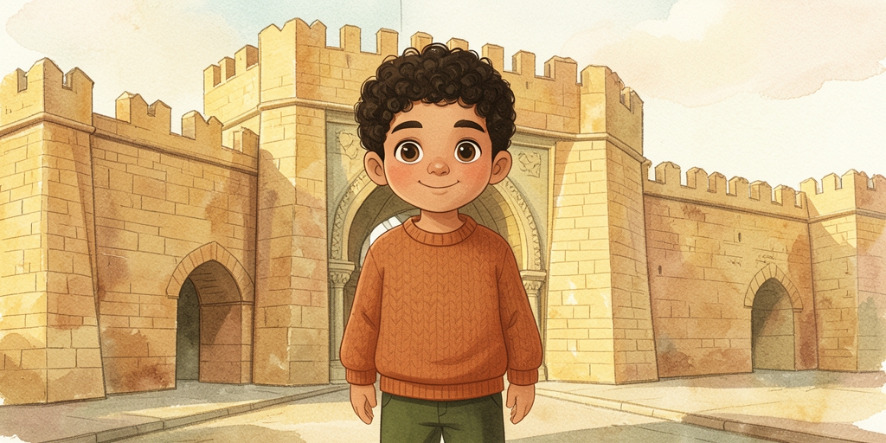
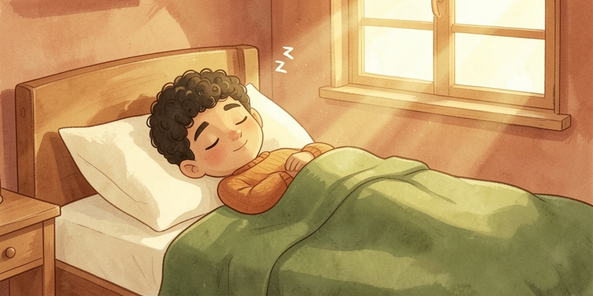
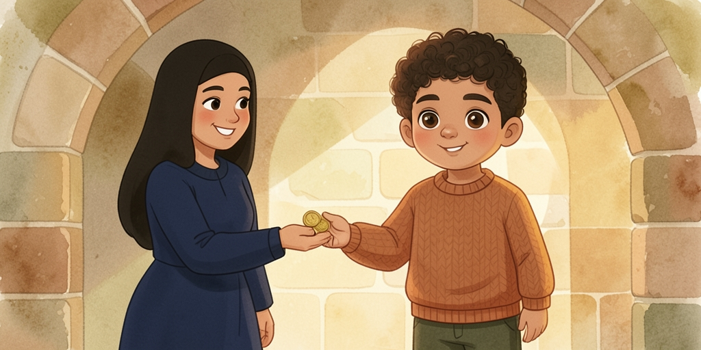
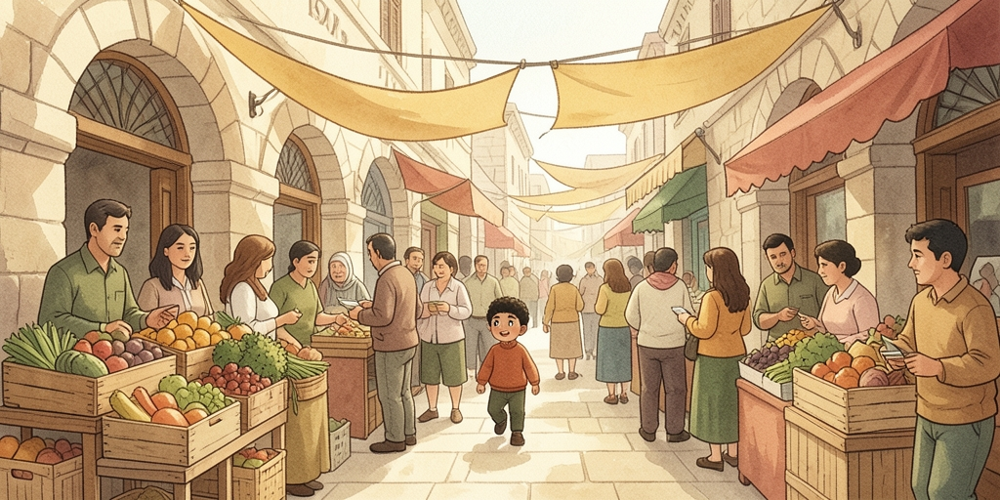
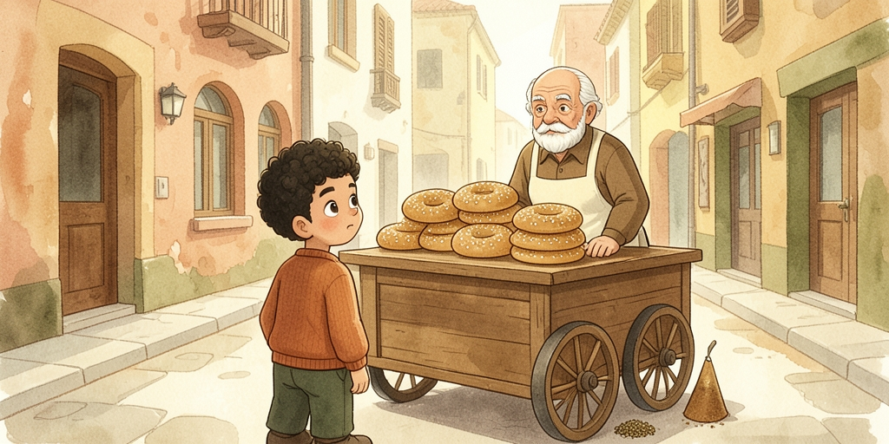
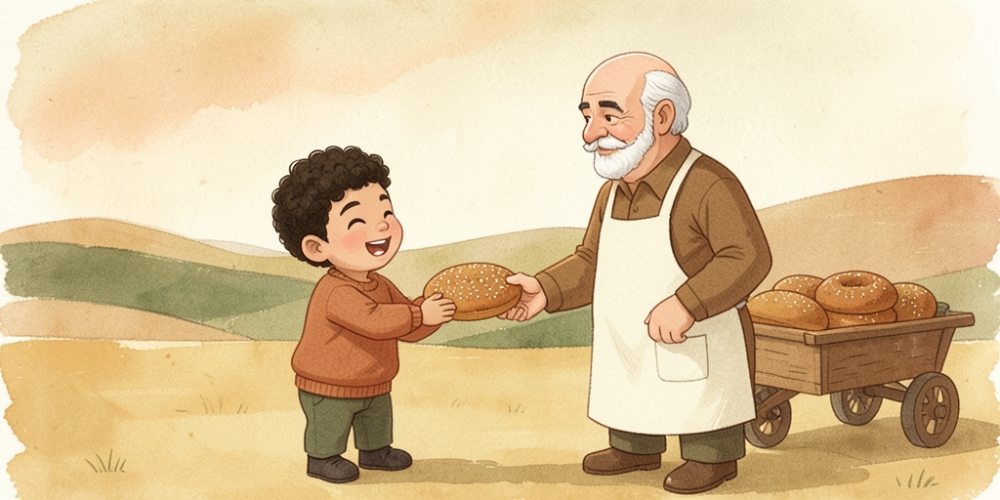
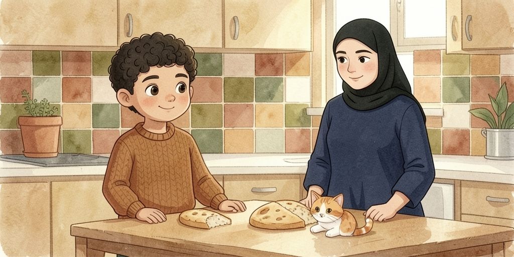

Every page gives you the Arabic first. Underneath, in smaller type, you get the Jerusalem pronunciation in chat-alphabet, then the English. Try to read the Arabic aloud before you look down.
| Say | Not | ||
|---|---|---|---|
| بدي | أريد | biddi | I want |
| شو | ماذا | shou | what |
| بروح | أذهب | barou7 | I go |

هاد سامي.
سامي ولد عمره سبع سنين.
هو ساكن في القدس، جنب باب العامود.
This is Sami. Sami is a boy, seven years old. He lives in Jerusalem, right by Damascus Gate.

كل يوم الصبح، إمه بتقله:
«يلا يا سامي، قوم! رح تتأخر عالمدرسة!»
سامي بيفتح عيونه شوي شوي وبيقول:
«خمس دقايق كمان يا ماما!»
Every morning his mum says to him: “Come on Sami, get up! You're going to be late for school!” Sami opens his eyes little by little and says: “Five more minutes, Mum!”

بس اليوم الجمعة. ما في مدرسة!
إمه عطته عشر شيكل وقالتله:
«روح جبلنا كعك من عند أبو خالد.»
But today is Friday. No school! His mum gave him ten shekels and said to him: “Go bring us some ka'ak from Abu Khalid's.”

سامي نزل عالسوق. الدنيا زحمة كتير.
في ناس عم بتشتري خضرة، وفي ناس عم بتحكي وبتضحك.
وريحة الكعك بالسمسم ملت الشارع كله.
Sami went down to the market. It was really packed. Some people were buying vegetables, some were talking and laughing. And the smell of sesame ka'ak filled the whole street.

«صباح الخير يا عمو!»
«صباح النور يا سامي! شو بدك اليوم؟»
«بدي أربع كعكات، ومعهم زعتر لو سمحت.»
“Good morning, uncle!” “Good morning, Sami! What do you want today?” “I'd like four ka'ak, and some za'tar with them, please.”

أبو خالد ضحك وقال:
«خدهم، وهاي وحدة كمان هدية إلك.»
سامي فرح كتير وقال:
«يسلمو إيديك يا عمو!»
Abu Khalid laughed and said: “Take them, and here's one more as a present for you.” Sami was really happy and said: “Bless your hands, uncle!”

رجع سامي عالبيت وهو ماكل نص كعكة عالطريق.
إمه شافته وقالت:
«يا حرام! مين أكل الكعكة؟»
سامي ضحك وقال:
«مش أنا... القطة!»
Sami got home having already eaten half a ka'ak on the way. His mum saw him and said: “Oh no! Who ate the ka'ak?” Sami laughed and said: “Not me... the cat!”
All of these are what people actually say in Jerusalem. Where the fus7a word differs, it is noted.
| هاد / هاي / هدول | haad / hayy / hadool | this (m.) / this (f.) / these |
| ولد | walad | boy · pl. ولاد wlaad |
| عمره سبع سنين | 3omro sabe3 sneen | he is seven years old |
| ساكن | saakin | living, residing |
| جنب | janb | next to, beside |
| الصبح | is-sob7 | the morning · بالصبح in the morning |
| إمه | immo | his mother · إمي immi my mother |
| بتقله | bit2ello | she says to him (قال + له run together) |
| يلا | yalla | come on, let's go |
| قوم | 2oum | get up! · f. قومي 2oumi |
| رح | ra7 | will (future) · رح أروح I'll go |
| تتأخر | tit2a55ar | you'll be late |
| شوي شوي | shway shway | slowly, bit by bit |
| كمان | kamaan | also, more, as well |
| دقايق | da2aaye2 | minutes · sg. دقيقة da2ee2a |
| ما في | maa fee | there isn't · في fee there is |
| عطته | 3atito | she gave him · عطى 3ata to give |
| جبلنا | jiblna | bring us! · جاب jaab to bring |
| من عند | min 3ind | from (someone's place) |
| نزل | nizil | he went down · طلع tili3 he went up |
| الدنيا زحمة | id-dinya za7me | it's crowded (lit. the world is crowded) |
| كتير | kteer | a lot, very |
| عم بتشتري | 3am btishtiri | she is buying (right now) |
| خضرة | 5adra | vegetables, greens |
| بتحكي | bti7ki | she talks · حكى 7aka to speak (not تكلم) |
| ريحة | ree7a | smell |
| ملت | malat | it filled |
| شو بدك؟ | shou biddak? | what do you want? · f. بدك biddek |
| لو سمحت | law sama7t | please (asking a favour) |
| خدهم | 5idhom | take them · خد 5od take |
| هدية إلك | hdiyye 2ilak | a present for you |
| فرح | firi7 | he was happy, he was glad |
| يسلمو إيديك | yislamo 2ideek | "bless your hands" — thanks for food or a favour |
| نص | nuss | half |
| شافته | shaafto | she saw him · شاف shaaf to see (not رأى) |
| يا حرام | ya 7araam | oh no! / poor thing! |
| مين | meen | who |
| مش أنا | mish ana | not me · مش = the all-purpose "not" |
The grammar behind the story. These five patterns cover most of what makes Palestinian sound Palestinian.
Stick بـ on the front of the present tense for anything habitual or general. بروح barou7 I go · بتروح btrou7 you go / she goes · بيروح birou7 he goes · منروح mnrou7 we go · بتروحوا btrou7u you (pl.) go · بيروحوا birou7u they go.
عم بيروح 3am birou7 — he's going, right now. Compare بيروح birou7 — he goes, generally. From the story: عم بتشتري, عم بتحكي.
رح تتأخر ra7 tit2a55ar — you'll be late. You will also hear حـ glued on (7atit2a55ar) and رايح. Never سوف, never سـ.
ما goes in front of verbs: ما بعرف maa ba3ref I don't know ·
ما شفته maa shufto I didn't see him.
مش goes in front of everything else: مش أنا mish ana ·
مش هون mish hoon not here · مش حلو mish 7ilu not nice.
Syrians use مو where Palestinians use مش — worth recognising, but stick with مش.
على + الـ becomes عالـ : عالمدرسة 3al-madrase, عالسوق 3as-sou2, عالبيت 3al-beet. Same trick with بـ : بالسمسم bis-simsim. Note how the l assimilates to s, t, n, r, d, z, sh — that is the sun-letter rule, and it is alive and well in speech.
The word on the left is what you will hear in Jerusalem. The struck-through word is the fus7a equivalent — you will read it in books and hear it on the news, but saying it in conversation is exactly what marks someone out as a learner.
| Palestinian | Fus7a | ||
|---|---|---|---|
| شو | ماذا | shou | what |
| وين | أين | ween | where |
| ليش | لماذا | leesh | why |
| هلأ | الآن | halla2 | now (also هسا hassa) |
| كتير | جداً | kteer | very |
| إشي | شيء | ishi | thing (very Palestinian) |
| زلمة | رجل | zalame | man, guy |
| إجا | جاء | ija | he came |
| قعد | جلس | 2a3ad | he sat |
| بدو يروح | يريد أن يذهب | biddo yrou7 | he wants to go |
| هون / هناك | هنا | hoon / hnaak | here / there |
| قديش | كم | 2addeesh | how much |